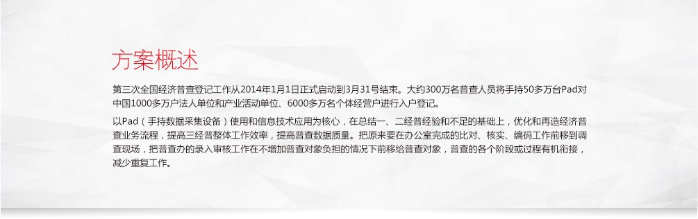
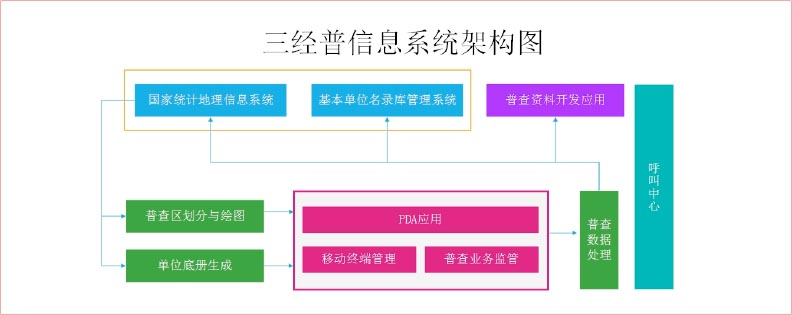
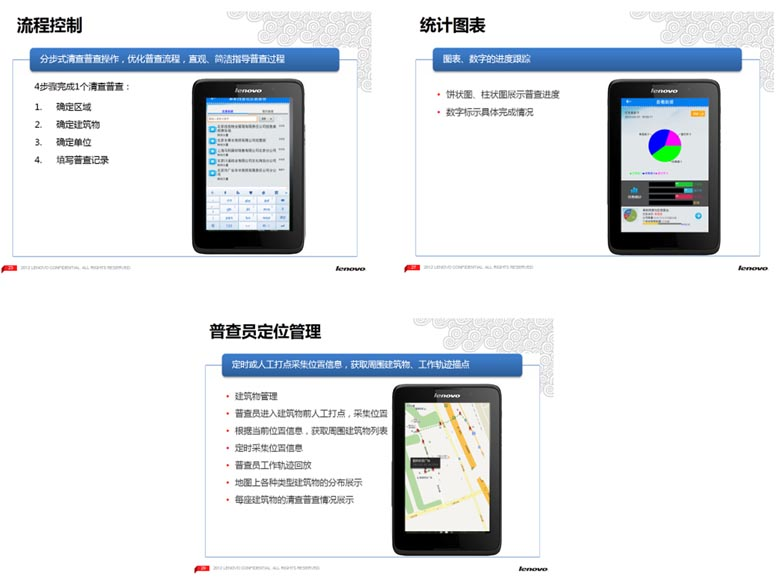

系统特点
业务系统架构
功能介绍：
针对三经普的业务需求背景，系统围绕四部分进行设计和开发：PAD终端、PAD应用平台、移动终端管理平台和普查业务监管平台。各部分涵盖了以下功能：
- PAD终端：包含普查员登录、下载普查任务数据、查找建筑物、新增建筑物、单位普查、个体户普查、底册清理、单位三证拍照、OCR采集、查看普查数据、普查跟踪、上传普查数据、软件更新等功能。
- PAD应用平台：包含角色权限管理、原始数据导入、地图数据管理、底册数据管理、普查数据管理、普查任务管理、普查员登陆认证、数据下载和上传、普查培训等。
- 移动终端管理平台：包含各地区终端安全管理、终端用户管理、终端轨迹监控、实时位置监控、客户端版本管理等。
- 普查业务监管平台：一是针对普查员的普查路径追踪、普查任务进度监控；二是针对整个辖区普查进度的统计监控；三是系统日志。
核心功能
客户收益
移动互联信息技术是统计现代化的重要手段。据了解，国家统计局局长马建堂在年初的全国统计工作会上提出，2015年底前，所有由调查对象填报的调查全部通过互联网直接向国家数据中心报送、所有现场调查全部由调查员手持电子终端现场采集数据并通过网络直报国家数据中心、所有统计业务全部在统一软件平台处理数据。为如期实现“三个全部”，按照“功能优化、性能稳定、友好兼容、方便易用”原则，不断改进和完善平台的各项功能，更好地满足各专业、各级统计人员和企业用户的业务需求；充分发挥企业一套表联网直报平台的优势，发挥三经普建立起的移动采集管理系统和大量移动设备在日常统计业务中的作用，切实提高统计业务的集约化水平。推进PDA移动采集终端的普遍应用；按照建立现代化服务型统计的要求，在联网直报呼叫中心服务体系的基础上，增加对上报企业的信息反馈服务，最大限度地发挥统计资料的社会效益；加强信息化队伍建设、加强信息化人才培养、继续加大信息化建设投入。

联想移动互联解决方案
联想移动互联解决方案以最终用户的体验为出发点，借助移动互联、大数据分析、云计算等创新技术，通过业务流程的再造，实现了企业资源的合理规划和高效运转。
联想在移动互联领域，通过梳理客户业务流程，整合行业专业应用软件，针对客户的行业特质以及业务需求进行深度定制，目前已储备超过200余项专业解决方案。更多解决方案以及产品、案例、咨询信息，请通过以下入口进入（ID:Lenovomia）：